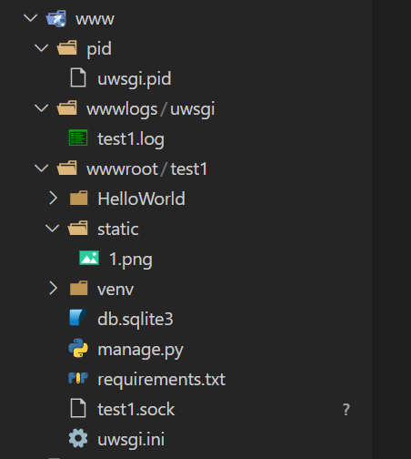

记录Django+uwsgi+Nginx配置
实现
模拟从windows开发环境，迁移项目至linux生产环境
前置条件
安装Django、uwsgi、Nginx
1 | pip install uwsgi |
uWSGI 以客户端-服务端模型运行。Web 服务器（例如 nginx，Apache）与一个 django-uwsgi “worker” 进程交互，提供动态内容。
其他的安装不再赘述。
Django项目创建
创建虚拟环境
创建HelloWorld项目
1 | django-admin startproject HelloWorld |
- 创建requirements.txt文件
1 | pip freeze > requirements.txt |
- 迁移到服务器
uwsgi文件配置
1 | [uwsgi] |
启动命令
uwsgi --ini uwsgi.ini杀死进程命令
pkill -f uwsgi -9重启uwsgi命令
uwsgi --reload /www/pid/uwsgi.pid
一些坑 : 文件权限要够，要不然一些文件无法创建将导致失败
可以通过查看日志来查错
Nginx配置
在/etc/nginx/conf.d下创建.conf文件。
1 | server { |
其中uwsgi_pass的内容与上面uwsgi对应。这个是用来通信的。
重启Nginx命令：service nginx restart
可以通过查看日志了解状态
目录结构
/www

/etc/nginx/conf.d

/var/log/nginx
运行效果
修改了hosts文件
本博客所有文章除特别声明外，均采用 CC BY-NC-SA 4.0 许可协议。转载请注明来自 HUII's Blog！
相关推荐


评论